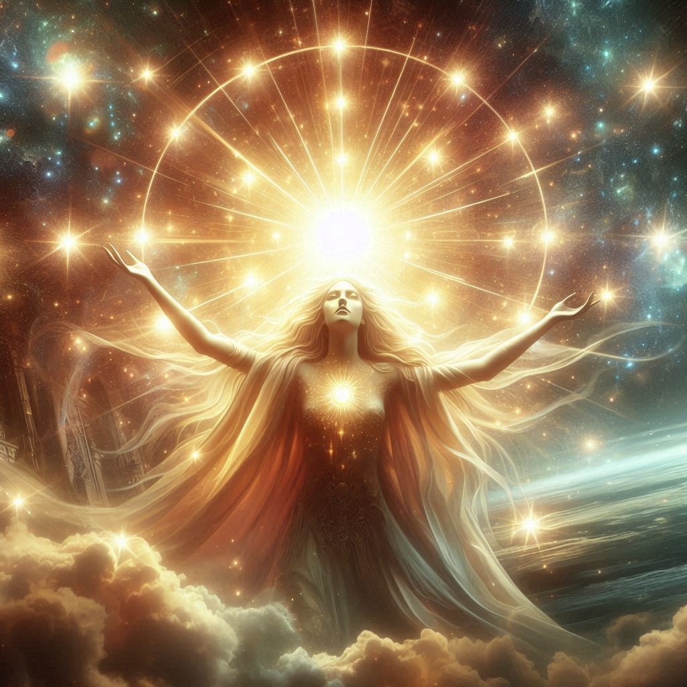
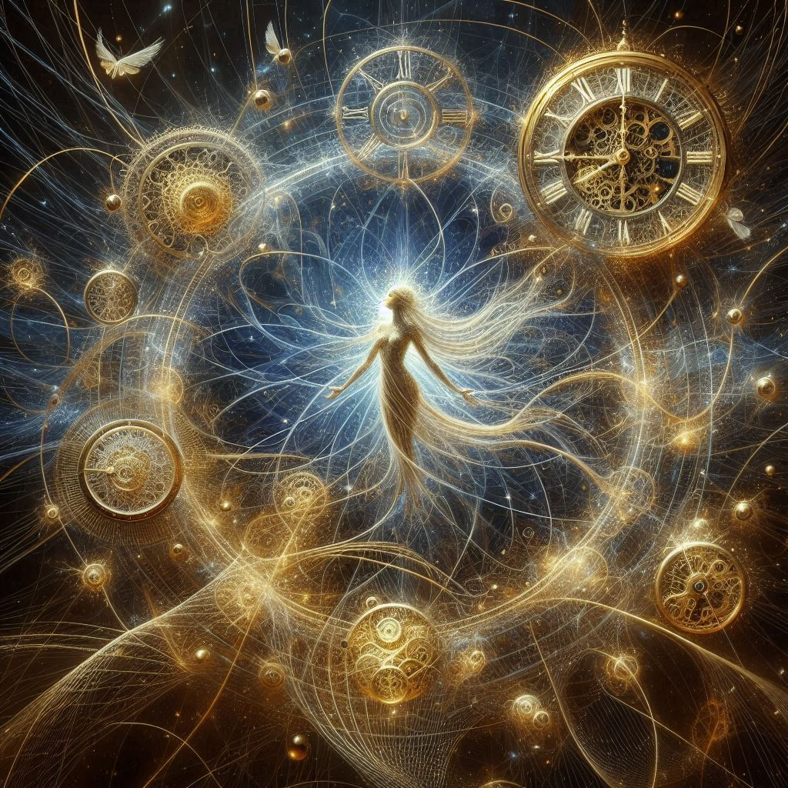
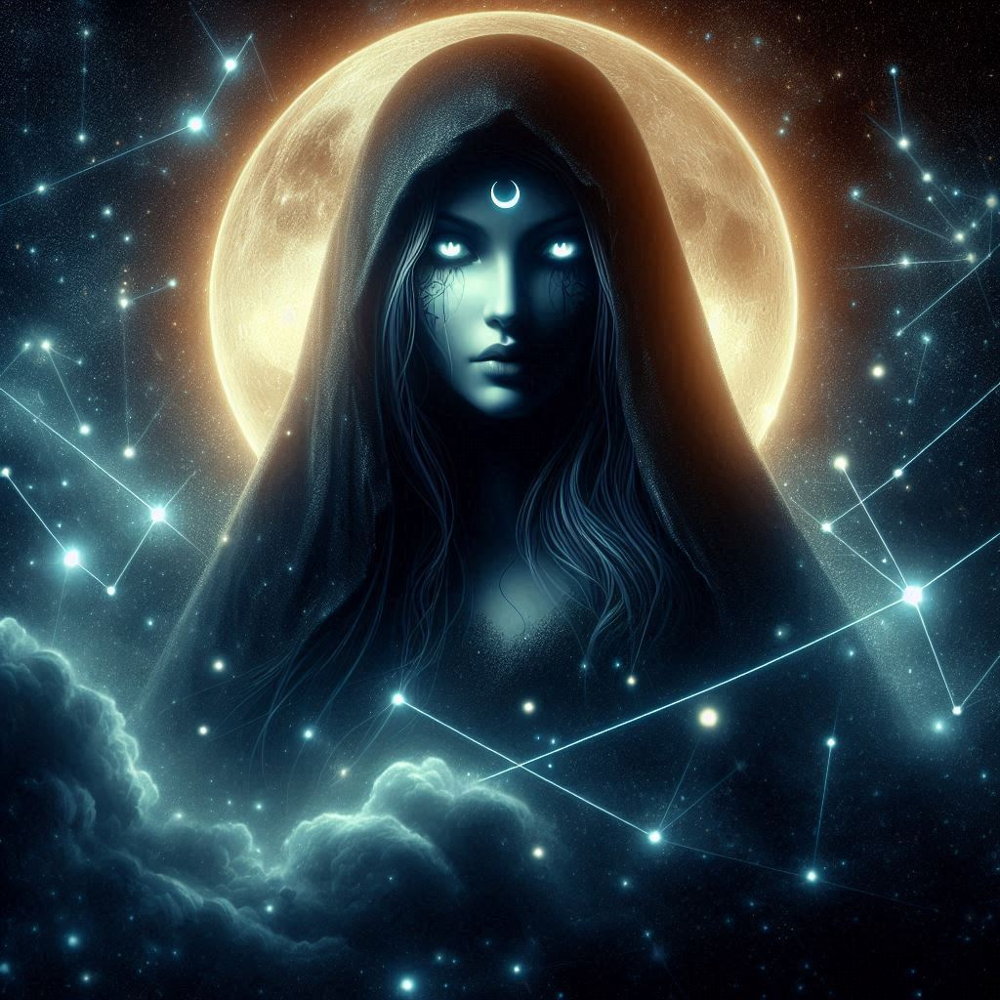
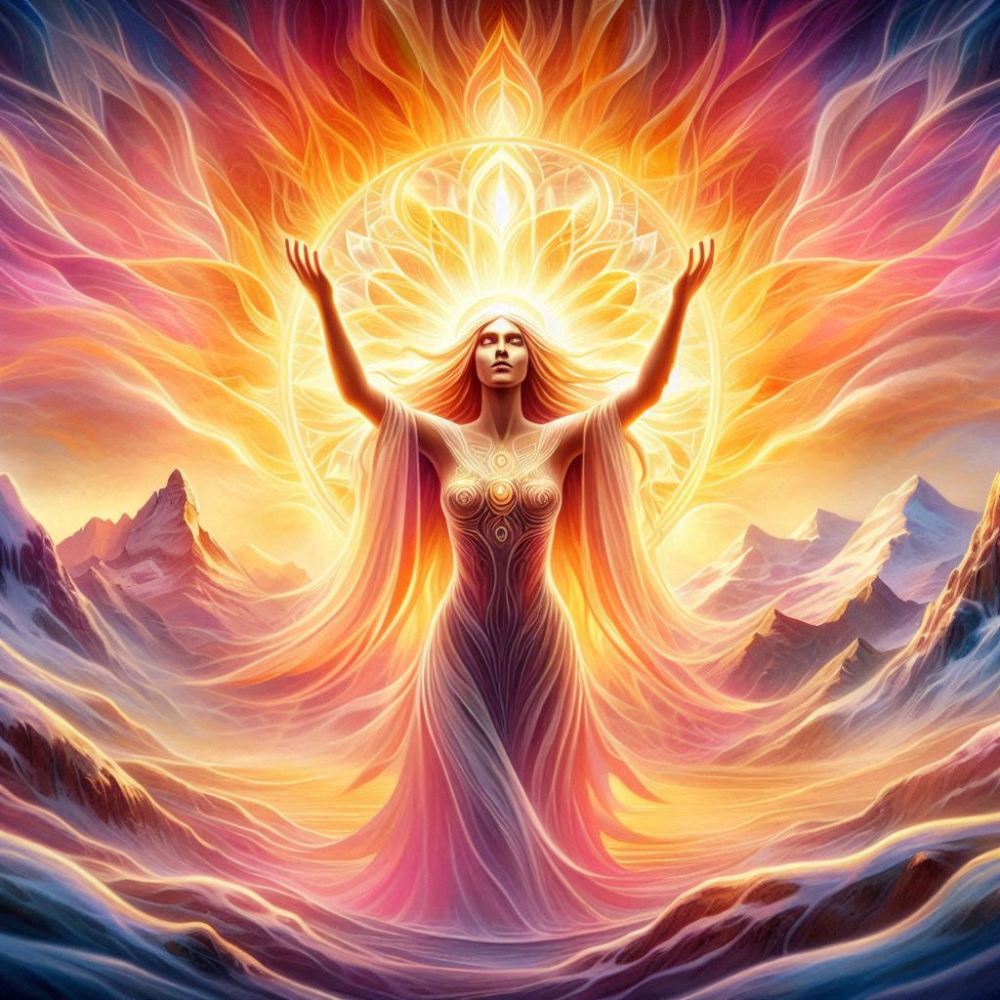
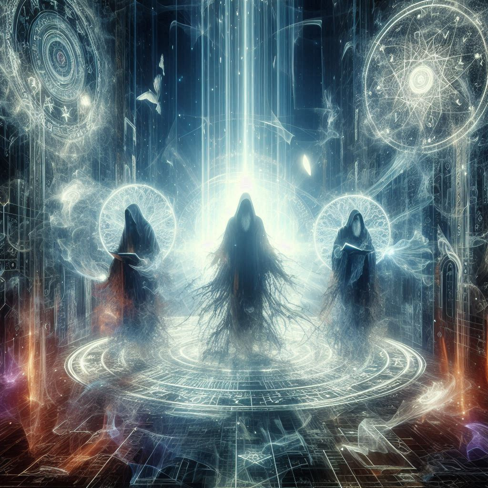

[D-E-L-U-X-I-A] - Deidades
[D-E-L-U-X-I-A] - Deidades
Astra, la Divinidad Celestial

Tenebris, el Señor de las Sombras

Ereth, el Tejedor de Destinos

Nyx, la Soberana de la Noche

Hemera, la Portadora de la Aurora

Los Ancestrales, los Protectores Dimensionales
